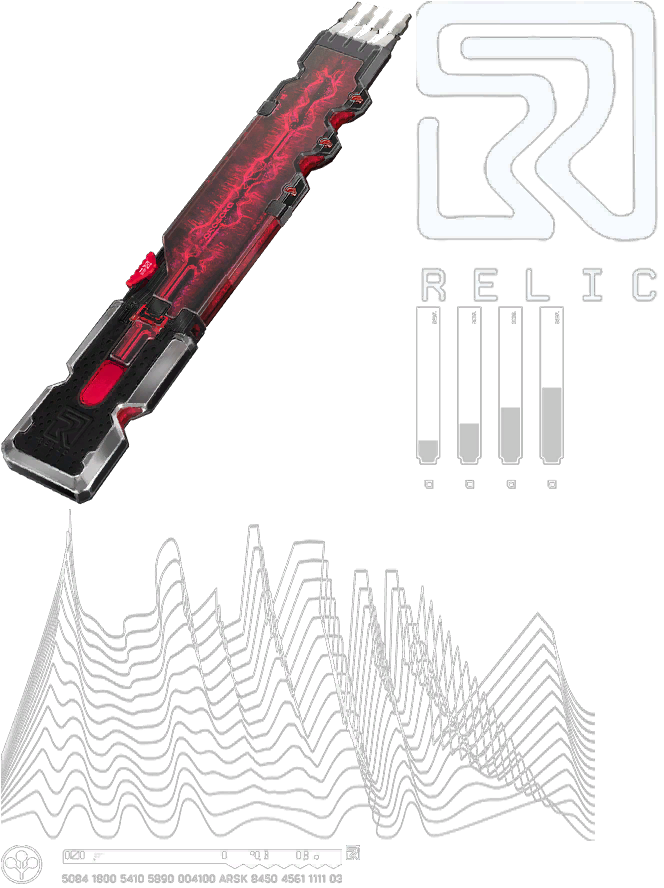

Neural Signature Capture
Layered waveform analysis continuously records your nervous system. Live sampling ensures that what’s preserved is not just a snapshot — it’s a moving, evolving self.
- Blackwall-adjacent neural mapping.
- Phase-based conflict detection between host & construct.
- Adaptive thresholds to maintain stable engram quality.